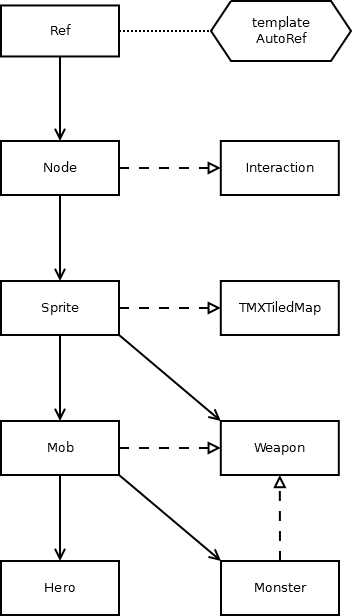

Fate-grand-rider
2020软工大项目fate-grand-rider说明文档
类的框架

本项目中主要的（基）类的结构如图，主要包括继承自cocos2d中的动画精灵Sprite的生物Mob和武器Weapon，以及继承自cocos2d中的组件Component的互动组件Interaction。
主要类的说明如下：
Mob：生物，提供关于生物移动时对应物理引擎的接口，并作为Hero和Monster类的基类。Weapon：武器，所有的生物的攻击都通过武器来完成，武器提供的接口为攻击和瞄准。Hero：英雄，即主角，由玩家键盘控制移动，携带的武器可以用鼠标控制进行攻击。Monster：怪物，行为与英雄类似，但由电脑AI控制。
互动组件Interaction比较特殊，所有元素（英雄、怪物、地图）中的互动都以Interaction为中介进行，即首先用getInteraction获取节点对应的互动，然后再调用互动对应的函数，一个典型的例子如下：
auto space = GameScene::getRunningScene()->getSpace();
if (auto target = space->queryPointNearest(this->getPosition()))
getInteraction(target)->attack(this, _damage);例中展现武器类进行攻击的基本模式，首先获取了物理空间以进行搜索最近的目标，若找到目标（指针非零），则获取对应的互动组件，调用该组建的attack方法，完成一次攻击。 Interaction类所进行的互动包括，角色与地图的互动：靠近touch、离开endTouch、空格键进行对话dialog；地图中建筑与房间的互动：进入房间enterRoom、离开房间enterRoom，连接房间linkRoom；从地图中加载互动的静态方法load；受攻击时的互动attack。这些具体的互动的方法不会全部定义，如果不定义时默认忽略对应类型的互动。
游戏操作
游戏使用WASD键控制方向进行移动，单击鼠标左键进行攻击，按空格键可以与场景中的建筑进行交互。